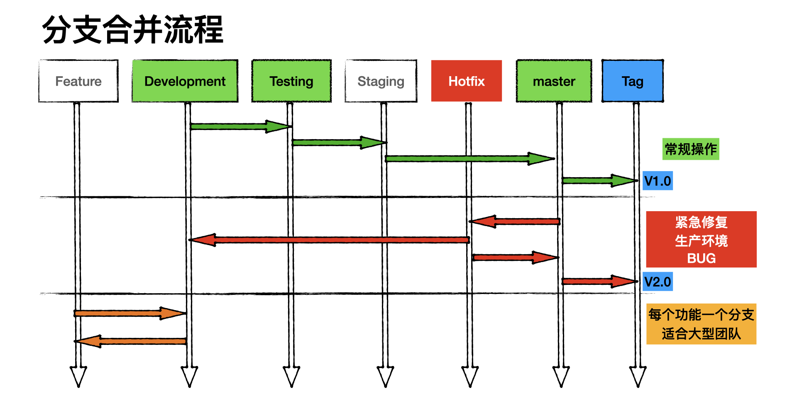

| 知乎专栏 ｜ 多维度架构 |
开发部
产品部
开发部
开发部
测试部
测试部
运维部
运维部
我常常把项目开发计划比做列车时刻表，每一个站对应一个项目节点即里程碑。
列车时刻表的概念来自早年我参与的一个英国项目，我们使用 TRAC 管理项目，这是一个古老的项目管理软件，他是很多现代项目管理软件的雏形，很多思想沿用至今，甚至无法超越它，由于他是 Python 开发，框架古老，后期无人维护更新跟不上时代节奏。 另一个项目模仿它90%的功能叫 Redmine，Redmine 红极一时，但是仍然没有统一江湖。直到 Github/Gitlab 出现，一站式解决了软件项目管理中遇到的各种刚需问题，TRAC，Redmine，Confluence，Bugzilla，Jira, Mantis, BugFree, BugZero…… 慢慢淡出人们视野。
在 TRAC 中，任务叫做 Ticker 翻译成中文就是“票”，项目是沿着 Roadmap 走，走过的路叫时间线 Timeline， 里程碑又形象的比做站点，每个 Milestone 里面是一组 Ticker。每次升级就如同买票上车，火车不等人，同理项目也按照自己的 Roadmap 运行，错过只能等下一班。
项目经理会在即时通信软件中，通知发车时间，需要升级同事就会将自己上手的Ticker代码合并主干，然后等待发车。
[ Roadmap ]
---------------.
----\ \
Timeline -----o-----o-----o-----o-----o-----o----->
----------/ /
---------------------
火车偶尔也会出现晚点，取消班次，临时停车或不停靠直接开往下一站的情况。项目也是如此：
晚点就是项目延期，取表班次就是停止本次里程碑的上线计划，临时停靠即热修复和紧急上线，不停靠就是跳过本次里程碑，下一个里程碑一次性解决。
我们常常会在即时通信软件中发布发车时间和询问发车时间。
项目计划应该是像列车时刻表一样，一旦你定好，就不能随意修改，必须按照设定的里程碑有条不紊的推进。
我们发现很多国内项目是被任务牵着做，即没有项目路线图，走到那里算那里，觉得差不多了就上线，相当随意。一旦出现交叉，冲突，就会手忙脚乱，回撤更是家常便饭。
项目管理需要设计工作流
你会发现 Gitlab 并没有提供工作流的功能？为什么？你是否想过？不仅Gitlab 没有 ，微软的 Microsoft Project 也没有，为什么 Microsoft Office 不提供这种功能？
谈谈我的一段职业生涯，大约在2000年我来到深圳，第一份工就是OA（办公自动化）系统开发，当时有很多公司开发类似产品，也包括金山软件，用友等等。20年过去了，OA没有一个标准，也没有一个成功的产品，OA似乎成为企业数字化转型不上的工具之一，上了之后又发现这东西根本没法使用。
OA 没有成为主流的原因，死结就是工作流，每个公司都有自己的流程，无法统一标准，即使是管理学诞生的西方国家，也没有统一的流程，流程是随着市场和环境不断变化的，没有任何流程能始终延续。经历了德鲁克时代的企业到目前为止保留下来的流程也只有部分行政审批流程。
这就是微软不碰这块，IBM也做，Oracle 也不做的原因。虽然技术上已经又成熟的工作流引擎，图形化配置，使用过的人都表示巨难用，对于非技术的行政人员几乎都放弃了。
但凡设计流程，设计者都会表现自己，最终设计的出的流程无比复杂，看似流程堪称完美，执行起来不是内耗就是受阻。几乎都是做加法思维，能做减法思维的人少之又少。
工作流设计原则
目的是让工作流可操作，易操作，能冗余。
下面这个流程有问题吗？
开发人员提测 -> 开发组长审批 -> 技术部门审批 -> 测试部门审批 -> 测试组长审批 -> 分配测试人员
稍具规模的企业不都是这样做的吗？
开发人员提测 | 分配测试人员
--------------------------------------------------
开发组长审批 | 测试组长审批
--------------------------------------------------
技术部门审批 | 测试部门审批
矩阵转换一下，看的更清晰，工作流从一段流向另一段，经历两个部门，六个节点。理论上审批超过三层就要控制，超过三层就会影响进度。为什么会出现这种情况？
我做过分析，国内的管理层大可分为两类，一类是着重考察项目过程本身，一类是主要考察项目的参与者和结果，前者着重于时间管理，后者倾向于绩效考核。 [2]
第一类管理者，很清楚项目的 Roadmap，所以根本无需做，技术部门审批到测试部门审批这个审批过程，这些工作都是在 Roadmap 会议定定好的，按时发车即可。
第二类管理者，通常是学管理出身，运用管理学工具管理项目，他无法参与项目过程，只能关注时间点和进度，不断催促，他需要知道现在做什么？什么时候做完？所以需要事事审批。
Issues 议题
由于项目是由上至下层层分解下去的，制定了严格的Roadmap，每个参与者知道自己该做什么，如何做，什么时间完成，也就无需再向上汇报工作。
团队所要做的就是按照 Roadmap 的时间和节点走即可。
一旦时间点确定，接下来就是分配任务倒指定开发人，任务的分配十分讲究，分配任务要精确描述，不能使用模糊语言，那样会造成误解。我的分配原则是5W2H方法：
- What：做什么事？
- Why：为什么做这件事？有什么意义？目的是什么？有必要吗？
- When：什么时候做，完成的时间是否适当？
- Where：在什么地方做，在什么范围内完成？
- Who：由谁负责做？由谁负责执行？谁更合适？熟练程度低的人能做吗？
- How：怎样做
- How much: 成本 （不是所有岗位都会涉及成本）
举例，运维任务
- What：为api服务器做负载均衡，多增加一个节点，负载均衡算法采用最小连接数。
- Why：目前api服务器只有一台，如果出现故障将影响到所有业务运行，顾该服务器存在单点故障，需要增加节点。
- When：本周内完成，周末上线。（此处可以写日期）
- Where：在A机柜，低2机位处，连接倒交换机第三个端口。
- Who：XXX负责网络配置，XXX负责上架，XXX 负责验收测试
- How：增加/etc/hosts设置如下
- api.example.com 127.0.0.1
- api1.example.com 192.168.2.5
- api2.example.com 192.168.2.6
举例，开发任务
- What：增加图片验证码。
- Why：目前用户注册登陆以及发帖无验证吗，某些用户通过机器人软件批量开户/发广告帖，给管理带来很大困扰。
- When：2014-06-15 开始开发，2014-06-20 12:00 上线。
- Where：用户注册，登陆与发帖处增加该功能，。
- Who：张三负责验证码生成类的开发，李四负责用户注册，登陆UI修改，王五负责发帖UI的修改。
- How：具体怎么操作的细节，此处省略200字...
举例，测试任务
- What：测出XXX软件并发性能。
- Why：目前XXX软件在线任务达到200后，用户反映速度慢，经常掉线。
- When：故障时间点10：00AM，需要周二完成测试，周五完成优化，月底上线。（此处可以写日期）
- Where：在AAA分支检出代码，编译后部署到BBB环境。
- Who：XXX负责网络配置，XXX负责软件部署，XXX 负责测试
- How：具体怎么操作的细节，此处省略200字...
|  |
多个功能并行开发最常遇到的问题就是冲突，例如A，B，C三个功能同时开发，共用一个分支（development）A开发完成，B功能开发1/3，C功能有BUG，此时升级A功能，B跟C也会被升级上去。
实现并行开发，需要满足两个条件。一是合理的任务分解，二是配套的环境，三是分支的应用。
任务分解要尽可能解耦，出现交叉合并为一个任务。一个任务对应一个功能，功能与功能之间依赖关系必须理清，避免出现交叉依赖和循环依赖。
A -> B -> C
\-> D -> E
\--> F
配套环境是指开发和测试环境，参考生产环境，以最小化实例，最小化节点，满足运行项目的环境，尽量减少环境差异，包括硬盘配置差异，网络差异，资源配置差异，以及应用软件安装配置等等差异。
准备配套环境
上面三个环境，至少一台独立服务器，功能测试环境(feature/hotfix) 需要若干台服务器。功能测试环境的服务器是共享的，即谁提测谁用，用过之后释放出来。
每个环境都有一整套，配套的服务，例如数据库，缓存，搜索引擎，消息队列等等……
在小公司中通常会省去 UAT 这个环节，从 Testing直接上生产环境
分支保护的目的，防止被误删除，禁止向该分支提交代码，代码只能通过合并方式进入该分支。
分支的权限管理：
功能分支（Feature），任务分解之后，每个功能对应一个分支，功能分支的代码来自 development 分支，我们会有很多功能分支，开发任务在功能分支上完成开发，开发完成后将任务标记为“测试”，测试部会安排测试环境，部署该分支上的代码，测试结果分为BUG和Pending（测试通过，挂起，等待发车）。
买票上车：在功能分支上，我们有很多开发完成功能，他们处于挂起状态，然后根据升级计划，有序的合并到开发分支，再到测试分支，最后升级到生产环境。
Feature 分支操作步骤：
代码合并流程
Development -> testing -> staging -> master(production)
从 development 像 testing 分支合并
git checkout development git pull git checkout testing git pull git merge --no-ff "development" git push
testing 分支向 master 分支合并
获取 testing 合并请求的分支
git fetch origin git checkout -b "testing" "origin/testing"
如果此前已经执行过，使用下面命令切换分支即可，切换后 pull 代码，看看有什么新提交
git checkout "testing" git pull
切换到 master 分支
git fetch origin git checkout "master" git branch --show-current git merge --no-ff "testing"
将合并结果推送到远程
git push origin "master"
从 development 到 testing
git checkout development git pull checkout testing git checkout development public/doc/UserGuide.pdf git status git commit -a -m '手工合并' git push
从 testing 到 staging
git checkout staging git pull git checkout testing public/doc/UserGuide.pdf git commit -a -m '手工合并' git push
从 stage 到 master
git checkout master git pull git checkout staging public/doc/UserGuide.pdf git commit -a -m '手工合并' git push
案例，例如我们从 testing 分支向 master 分支合并代码出现冲突，该如何解决呢？
首先，两个分支拉取最新代码
neo@MacBook-Pro-Neo ~/workspace/api.netkiller.cn % git checkout testing neo@MacBook-Pro-Neo ~/workspace/api.netkiller.cn % git pull neo@MacBook-Pro-Neo ~/workspace/api.netkiller.cn % git checkout master neo@MacBook-Pro-Neo ~/workspace/api.netkiller.cn % git pull
然后合并分支，从 testing 分支向 master 合并
neo@MacBook-Pro-Neo ~/workspace/api.netkiller.cn % git merge --no-ff testing 自动合并 neo-incar/src/main/java/com/neo/incar/utils/PaperlessConfig.java 冲突（内容）：合并冲突于 neo-incar/src/main/java/com/neo/incar/utils/PaperlessConfig.java 自动合并失败，修正冲突然后提交修正的结果。
出现冲突，编辑冲突文件
vim neo-incar/src/main/java/com/neo/incar/utils/PaperlessConfig.java
保存后重看状态
neo@MacBook-Pro-Neo ~/workspace/api.netkiller.cn % git status 位于分支 master 您的分支与上游分支 'origin/master' 一致。 您有尚未合并的路径。 （解决冲突并运行 "git commit"） （使用 "git merge --abort" 终止合并） 要提交的变更： 修改： neo-admin/src/main/resources/application-prod.yml 修改： neo-admin/src/main/resources/application-test.yml 修改： neo-common/src/main/java/com/neo/common/enums/IncarAttachTypeEnum.java 修改： neo-incar/src/main/java/com/neo/incar/service/impl/IncarAttachServiceImpl.java 未合并的路径： （使用 "git add <文件>..." 标记解决方案） 双方修改： neo-incar/src/main/java/com/neo/incar/utils/PaperlessConfig.java
将合并的文件添加到 git
neo@MacBook-Pro-Neo ~/workspace/api.netkiller.cn % git add neo-incar/src/main/java/com/neo/incar/utils/PaperlessConfig.java neo@MacBook-Pro-Neo ~/workspace/api.netkiller.cn % git status 位于分支 master 您的分支与上游分支 'origin/master' 一致。 所有冲突已解决但您仍处于合并中。 （使用 "git commit" 结束合并） 要提交的变更： 修改： neo-admin/src/main/resources/application-prod.yml 修改： neo-admin/src/main/resources/application-test.yml 修改： neo-common/src/main/java/com/neo/common/enums/IncarAttachTypeEnum.java 修改： neo-incar/src/main/java/com/neo/incar/service/impl/IncarAttachServiceImpl.java 修改： neo-incar/src/main/java/com/neo/incar/utils/PaperlessConfig.java
提交代码
neo@MacBook-Pro-Neo ~/workspace/api.netkiller.cn % git commit -a -m '手工合并分支 testing -> master' [master 3652bf8e] 手工合并分支 testing -> master
推送代码
neo@MacBook-Pro-Neo ~/workspace/api.netkiller.cn % git push 枚举对象中: 1, 完成. 对象计数中: 100% (1/1), 完成. 写入对象中: 100% (1/1), 240 字节 | 240.00 KiB/s, 完成. 总共 1（差异 0），复用 0（差异 0），包复用 0 remote: remote: To create a merge request for master, visit: remote: http://192.168.30.5/netkiller.cn/api.netkiller.cn/-/merge_requests/new?merge_request%5Bsource_branch%5D=master remote: To http://192.168.30.5/netkiller.cn/api.netkiller.cn.git fcaefaf4..3652bf8e master -> master
Hotfix / BUG 分支与功能分支类似，都是用于存放 BUG，BUG分支会对应缺陷管理系统中的BUG ID，做到缺陷与代码可溯源。
hotfix 分支的使用场景，生产环境发现 bug 需要临时修复，testing 上面有正在进行的项目，不能从 testing -> master 合并，这时可以从 master -> hotfix 创建分支，修复和测试完成后合并到 master 分支，部署 production 环境。最后再将 hotfix 合并到 development 分支
对于中小公司，团队人数少的情况，可以不用建立 BUG 分支，可以在功能分支上完成修复，再合并到 development 分支。
突发情况，临时决定撤掉某些功能，这是会用到前滚和后滚操作
后滚操作举例
Timeline ----- [ 往期里程碑 ] -----> [ 本次升级里程碑 ] -----> [ 未来升级里程碑 ]
｜
V
o----------o-----o----------o---------o-----o------------->
^ ^ ^ ^ ^ ^
A功能 B功能 C功能 D功能 E功能 N功能
在本次升级的里程碑中，有五个功能搭便车，这个五个功能是按照顺序合并进来的，每次合并都可以找到对应的版本ID。
我们模拟一个场景，这五个功能是市场部的五个活动，现在由于各种原因，活动D这个功能需要撤掉，我们只需要找到 C功能的版本ID，将代码恢复到 C功能，然后重新合并一次 E功能
后滚到 C，然后增加 E功能
Timeline ----- [ 往期里程碑 ] -----> [ 本次升级里程碑 ] -----> [ 未来升级里程碑 ]
｜
V
o----------o-----o----------o---------o
^ ^ ^ ^ ^
A功能 B功能 C功能 D作废 E功能
当撤掉的功能需要恢复时就是前滚操作
Timeline ----- [ 往期里程碑 ] -----> [ 本次升级里程碑 ] -----> [ 未来升级里程碑 ]
｜
V
o----------o-----o----------o---------o
^ ^ ^ ^ ^
A功能 B功能 C功能 D功能 E功能
前滚到任意提交版本
Timeline ----- [ 往期里程碑 ] -----> [ 本次升级里程碑 ] -----> [ 未来升级里程碑 ]
｜
V
o----------o-----o----------o---------o-----o------------->
^ ^ ^ ^ ^ ^
A功能 B功能 C功能 D作废 E功能 N功能
有时我们希望把刚刚修改的文件复制出来，同时维持原有的目录结构，这样可能交给运维直接覆盖服务器上的代码。我们可以使用下面的命令完成这样的操作，而不用一个一个文件的复制。
git archive -o update.zip HEAD $(git diff --name-only HEAD^)
首先使用git log查看日志，找到指定的 commit ID号。
$ git log
commit ee808bb4b3ed6b7c0e7b24eeec39d299b6054dd0
Author: 168 <lineagelx@126.com>
Date: Thu Oct 22 13:12:11 2015 +0800
统计代码
commit 3e68ddef50eec39acea1b0e20fe68ff2217cf62b
Author: netkiller <netkiller@msn.com>
Date: Fri Oct 16 14:39:10 2015 +0800
页面修改
commit b111c253321fb4b9c5858302a0707ba0adc3cd07
Author: netkiller <netkiller@msn.com>
Date: Wed Oct 14 17:51:55 2015 +0800
数据库连接
commit 4a21667a576b2f18a7db8bdcddbd3ba305554ccb
Author: netkiller <netkiller@msn.com>
Date: Wed Oct 14 17:27:15 2015 +0800
init repo
导入 b111c253321fb4b9c5858302a0707ba0adc3cd07 至 ee808bb4b3ed6b7c0e7b24eeec39d299b6054dd0 间修改过的文件。
$ git archive -o update2.zip HEAD $(git diff --name-only b111c253321fb4b9c5858302a0707ba0adc3cd07)
首先 reset 到指定的版本，根据实际情况选择 --mixed 还是 --hard
git reset --mixed 096392721f105686fc3cdafcb4159439a66b0e5b -- or git reset --hard 33ba6503b4fa8eed35182262770e4eab646396cd --
git push origin --force --all or git push --force --progress "origin" master:master
例如撤回 project/src/main/java/cn/netkiller/controller/DemoSceneController.java 到上一个版本
➜ api.netkiller.cn git:(testing) git log project/src/main/java/cn/netkiller/controller/DemoSceneController.java
commit b4609646ee60927fe4c1c563d07e78f63ab106ea (HEAD -> testing, origin/testing)
Author: Neo Chen <netkiller@msn.com>
Date: Wed Nov 17 18:49:27 2021 +0800
手工合并，临时提交
commit bc96eb68ad73d5248c8135609191c51e258edf10
Author: Tom <tom@qq.com>
Date: Thu Oct 21 16:29:20 2021 +0800
获取激活场景
commit d564ea25bd556324f1f576357563a8ee77b3bdd9
Author: Tom <tom@qq.com>
Date: Thu Oct 21 15:15:26 2021 +0800
获取激活场景
commit d5a40165ad24a3a021fe58c6d78e0b7d97ab3cc5
Author: Tom <tom@qq.com>
Date: Thu Oct 21 14:43:16 2021 +0800
新增场景角色增加
commit aa98662cb9e781e328ee3d5cec23af29c81050d9
Author: Tom <tom@qq.com>
Date: Thu Oct 21 09:55:29 2021 +0800
新增场景角色增加
commit 140d22a8d4ea7fcc775d4372e8beb6d854831512
Author: Jerry <jerry@qq.com>
Date: Sat Oct 16 15:27:30 2021 +0800
场景接口修改
commit 2ddbb1ff933de663305db2396d99030c938c267a
Author: Tom <tom@qq.com>
Date: Fri Oct 15 10:55:30 2021 +0800
只显示最后五条记录
➜ api.netkiller.cn git:(testing) git log -5 project/src/main/java/cn/netkiller/controller/DemoSceneController.java
➜ api.netkiller.cn git:(testing) git reset bc96eb68ad73d5248c8135609191c51e258edf10 project/src/main/java/cn/netkiller/controller/DemoSceneController.java Unstaged changes after reset: M project/src/main/java/cn/netkiller/controller/DemoSceneController.java
➜ api.netkiller.cn git:(testing) ✗ git status On branch testing Your branch is up to date with 'origin/testing'. Changes to be committed: (use "git restore --staged <file>..." to unstage) modified: project/src/main/java/cn/netkiller/controller/DemoSceneController.java Changes not staged for commit: (use "git add <file>..." to update what will be committed) (use "git restore <file>..." to discard changes in working directory) modified: project/src/main/java/cn/netkiller/controller/DemoSceneController.java ➜ api.netkiller.cn git:(testing) ✗ git add project/src/main/java/cn/netkiller/controller/DemoSceneController.java ➜ api.netkiller.cn git:(testing) ✗ git commit -m '恢复到上一个版本' [testing 9959acd4] 恢复到上一个版本 1 file changed, 6 insertions(+), 8 deletions(-)
将任务ID写在代码提交注释信息当中，可以实现代码与任务的绑定，我们在项目平台上查看代码的时候，可以直接点击编号跳到对应的任务。这样便清晰的直到本次提交对应的任何和需求文档，便于代码溯源。
svn ci -m "- Implemented FR #53271, FR #52410 (Building multiple XXXX binary)"
各种版本来自与那个分支，它们的对应关系是什么？
分支与版本的关系：
Release Notes 撰写说明
当一个项目升级时，需要写一个文档纪录这次变动
常用信息类型
New Changed Fixed Unresolved Improved Ignore
例 11.3. Example - Release Notes
NEW - xxxxxxxxxxxxx CHANGED - xxxxxxxxxxxxx FIXED - xxxxxxxxxxx UNRESOLVED - xxxxxxxxx IMPROVED - xxxxxxxxx
你也同样可以参考很多开源组织编写的Release Notes，例如apache, mysql, php 等等